- Content: HTML 4.01
- Presentation: CSS1

- Content: XHTML 1
- Presentation: CSS2
- Content: HTML5
- Presentation: CSS3
- Some CSS rules won’t work without the vendor prefix.
- Mozilla Browsers (Firefox)
- moz
- Webkit Browsers (Safari, Chrome)
- webkit
- Opera
- o
- Internet Explorer
- ms
- <!--[ifIE]> <![endif]
- Not all CSS rules work with all browsers:
- http://www.caniuse.com/
- http://www.css3.info/selectors-test/
- http://quirksmode.org/css/contents.html
- Introduction to CSS3
- CSS3 Borders
- CSS3 Backgrounds
- CSS3 Text Effects
- CSS3 Shadows
- CSS3 Fonts
- CSS3
- 2D Transforms
- 3D Transforms
- Transitions
- CSS3 Animations
- CSS3 Multiple columns
- CSS3 selectors
- CSS3 Gradients
- Misc.
- Cascading Style Sheets 3
- CSS3 is the latest standard for CSS
- support is still limited
- Layout Engine Support
- Some of the CSS3 properties still in experimental phase are lead by a prefix:
- Trident (Microsoft Internet Explorer) : -ms-
- Gecko (Google Chrome & Safari) : -webkit-
- WebKit (Mozilla Firefox): -moz-
- Still wait for all browsers to fully support CSS3
- CSS3 is the latest standard for CSS
- Example:
- Rounded corners and shadows
- Text Effects
- Animations
- 2D/3D Transformation
- Multiple Column Layout
- Box Model
- Easy to apply changes & also decreases the size of a web page (with limited images)
- Might not be a problem for a computer
- But with mobile Internet usage it might be a factor
- Without using a design program, like Photoshop
- Create rounded borders
- Add shadow to boxes
- Use an image as a border
- Without using a design program, like Photoshop
<div>Box with imageBorder</div>
<style>
div
{
border:2px solid blue;
padding:10px 20px;
background:#abcabc;
width:200px;
border-image: url(border-image.png) 25 30 10 20 repeat stretch;
}
</style>

- Several new background properties to allow greater control
- background-origin
- Specifies the positioning area of the background images
- background-size
- Specifies the size of the background images
- background-clip
- Specifies the painting area of the background images
- Multiple images
<style> div {
border:1px solid black;
padding:35px;
background:url(domshom-logo.png);
background-repeat:no-repeat;
background-position:left;
}
#div {
background-origin:content-box;
}
</style> <div>
Education Website<br> WWW.DOMSHOM.COM<br>
Domshom is a real-time website that connects you to the latest technology. It will keep you updated with best-in-industry trends.<br>
Education Website<br> WWW.DOMSHOM.COM<br>
Domshom is a real-time website that connects you to the latest technology. It will keep you updated with best-in-industry trends.<br>
Education Website<br> WWW.DOMSHOM.COM<br>
Domshom is a real-time website that connects you to the latest technology. It will keep you updated with best-in-industry trends.<br>
</div>
- Several new background properties to allow greater control
- background-origin
multiplebackgrounds {
height: 150px;
width:270px;
padding: 20px 20px 20px 20px;
background: url(top.gif) top left no-repeat,
url(bottom.gif)bottom left no-repeat,
url(middle.gif) left repeat-y;
}

- CSS3 contains several new text features like
- text-shadow
- word-wrap
- Word Wrapping
- long words expand outside
- word-wrap property allows to force the text to wrap - even if splitting in the middle of a word
<style>
p.simpleText
{
width:5em;
border:2px solid #000000;
}
p.wrapText
{
width:5em;
border:2px solid #000000;
word-wrap:break-word;
}
</style>
<p class="simpleText"> This is a long word: <br><br>domshom.com</p>
<p class="wrapText"> This is a long word: <br><br>domshom.com</p>

#example0{
box-shadow:0px 0px 20px 0px #000;
-moz-box-shadow:0px 0px 20px 0px #000;
-webkit-box-shadow:0px 0px 20px 0px #000;
}
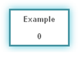
#example0{
box-shadow:0px 0px 20px 10px #000;
-moz-box-shadow:0px 0px 20px 10px #000;
-webkit-box-shadow:0px 0px 20px 10px #000;
}
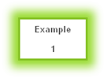
#example2{
box-shadow:20px 0px 20px 10px #000;
-moz-box-shadow:20px 0px 20px 10px #000;
-webkit-box-shadow:20px 0px 20px 10px #000;
}
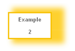
#example3{
box-shadow:20px 20px 20px 10px #000;
-moz-box-shadow:20px 20px 20px 10px #000;
-webkit-box-shadow:20px 20px 20px 10px #000;
}
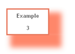
- Inner Shadows
#example2{
box-shadow:inset 0px 0px 20px 0px #000;
-moz-box-shadow:inset 0px 0px 20px 0px #000;
-webkit-box-shadow:inset 0px 0px 20px 0px #000;
}
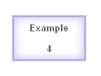
#example3{
box-shadow:0px 0px 10px 5px #000;
-moz-box-shadow:0px 0px 10px 5px #000;
-webkit-box-shadow:0px 0px 10px 5px #000;
}
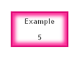
- Inner Shadows
#example2{
box-shadow:inset 5px 0px 5px 5px #222;
-moz-box-shadow:inset 5px 0px 5px 5px #222;
-webkit-box-shadow:inset 5px 0px 5px 5px #222;
}
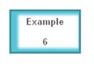
#example3{
box-shadow:inset 5px 5px 5px 5px #222;
-moz-box-shadow:inset 5px 5px 5px 5px #222;
-webkit-box-shadow:inset 5px 5px 5px 5px #222;
}
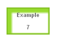
- CSS3 @font-face Rule
- Before CSS3 instaled fonts had to be used
- Include the font file on web server to be automatically downloaded to the user
Steps to Use the fonts
- Download Fonts
- Convert them Online
- Use the Stylesheet Code
- Use Anywhere
- Download Fonts
- There are many website where you can download fonts for free. Here are few website with a huge collection of free as well as paid fonts.
- dafont.com, urbanfonts.com, 1001freefonts.com
- Choose the font you like and download it.
- Convert The Fonts
- The downloaded fonts will work on most of the browsers but won't work on IE. To make the fonts appear on IE we'll have to convert it to a format(eot) that IE understands.
- How to Convert
- There are many software's available on the internet, most of them paid. Here's a website where we can convert the TTF font to EOT font for IE for Free!
- Online TTF To EOT converter (Google)
- Upload the font you want to convert on this website and then download the converted font. Notice the font extension before converting was TTF after converting changes to EOT. Keep both these files in the same folder Fonts.
- Transform is an effect that change shape, size and position of the element
- CSS3 Transforms
- Scale elements
- Turn elements
- Spin elements
- Stretch elements
- CSS3 Transforms
- rotateX()
- rotateY()
- Transforms
- CSS3 transform property lets you translate, rotate, scale, or skew any element on the page.
- Translation
- Translation functions allow you to move elements left, right, up, or down.
- These functions are similar to the behaviour of position: relative; where you declare top and left.
- When you employ a translation function, you’re moving elements without impacting the flow of the document.
- The translate(x,y) function moves an element by x from the left, and y from the top
let’s say we want to move the word “dukes” over to the right when the user hovers over it,
#ourExample h1:hover span {
color: #484848;
-webkit-transform: translateX(40px);
-moz-transform: translateX(40px);
-ms-transform: translateX(40px);
-o-transform:translateX(40px);
transform: translateX(40px);
}
- Scaling
- The scale(x,y) function scales an element by the defined factors horizontally and vertically, espectively. If only one value is provided, it will be used for both the x and y scaling.
Lets scale the same example
#ourExample h1:hover span {
color: #484848;
-webkit-transform: translateX(40px) scale(1.5);
-moz-transform: translateX(40px) scale(1.5);
-ms-transform: translateX(40px) scale(1.5);
-o-transform:translateX(40px) scale(1.5);
transform: translateX(40px) scale(1.5);
}
- Scaling
- The scale(x,y) function scales an element by the defined factors horizontally and vertically, espectively. If only one value is provided, it will be used for both the x and y scaling.
Lets scale the same example
#ourExample h1:hover span {
color: #484848;
-webkit-transform: translateX(40px) scale(1.5);
-moz-transform: translateX(40px) scale(1.5);
-ms-transform: translateX(40px) scale(1.5);
-o-transform:translateX(40px) scale(1.5);
transform: translateX(40px) scale(1.5);
}
- Rotation
- The rotate() function rotates an element around the point of origin (as with scale,by default this is the element’s center), by a specified angle value. Generally, angles are declared in degrees, with positive degrees moving clockwise and negativemoving counter-clockwise.
Lets scale the same example
#ourExample h1:hover span {
color: #484848;
-webkit-transform:rotate(10deg) translateX(40px) scale(1.5);
-moz-transform:rotate(10deg) translateX(40px) scale(1.5);
-ms-transform:rotate(10deg) translateX(40px) scale(1.5);
-o-transform:rotate(10deg) translateX(40px) scale(1.5);
transform:rotate(10deg) translateX(40px) scale(1.5);
}
- Skew
- The skew(x,y) function specifies a skew along the X and Y axes. As you’d expect, the x specifies the skew on the X axis, and the y specifies the skew on the Y axis.
- If the second parameter is omitted, the skew will only occur on the X axis:
Lets scale the same example
#ourExample h1:hover span {
color: #484848;
-webkit-transform:rotate(10deg) translateX(40px) scale(1.5);
-moz-transform:rotate(10deg) translateX(40px) scale(1.5);
-ms-transform:rotate(10deg) translateX(40px) scale(1.5);
-o-transform:rotate(10deg) translateX(40px) scale(1.5);
transform:rotate(10deg) translateX(40px) scale(1.5);
}
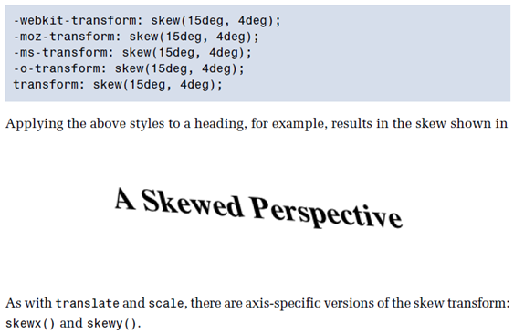
- Transitions:
- Transitions allow the values of CSS properties to change over time, essentially providing simple animations. For example, if a link changes color on hover, you can have it gradually fade from one color to the other, instead of a sudden change
- Here are the steps to create a simple transition using only CSS:
- Declare the original state of the element in the default style declaration.
- Declare the final state of your transitioned element; for example, in a hover state.
- Include the transition functions in your default style declaration, using a few different properties: transition-property, transition-duration,transition-timing-function, and transition-delay.
- Transition-duration
- The transition-duration property sets how long the transition will take. You can specify this either in seconds (s) or milliseconds (ms). We’d like our animation tobe fairly quick, so we’ll specify 0.2 seconds, or 200 milliseconds:
-webkit-transition-duration: 0.2s; -moz-transition-duration: 0.2s; -o-transition-duration: 0.2s; transition-duration: 0.2s;
- Transition-timing-function
- The transition-timing-function lets you control the pace of the transition in even more granular detail.Do you want your animation to start off slow and get faster, start off fast and end slowe You can specify one of the key terms ease, linear, ease-in, ease-out, or easein-out. The best way to familiarize yourself with them is to play around and try them all.
-webkit-transition-timing-function: ease-out; -moz-transition-timing-function: ease-out; -o-transition-timing-function: ease-out; transition-timing-function: ease-out;
- Transition-delay
- Finally, by using the transition-delay property, it’s also possible to introduce a delay before the animation begins. Normally, a transition begins immediately, so the default is 0. Include the number of milliseconds (ms) or seconds (s) to delay the transition:
-webkit-transition-delay: 250ms; -moz-transition-delay: 250ms; -o-transition-delay: 250ms; transition-delay: 250ms;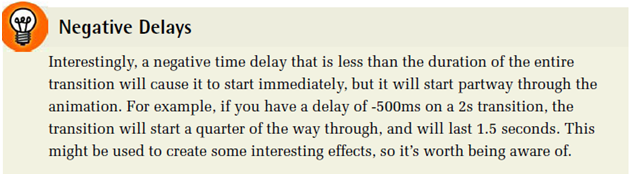
- Transition-shorthand property
- With four transition properties and three vendor prefixes, you could wind up with 16 lines of CSS for a single transition. Fortunately, as with other properties, there’s a shorthand available. The transition property is shorthand for the four transition functions described above. Let’s take another look at our transition so far:
#as2 h1 span{
-webkit-transition-property: -webkit-transform, color;
-moz-transition-property: -moz-transform, color;
-o-transition-property: -o-transform, color;
transform-property: transform, color;
-webkit-transition-duration: 0.2s;
-moz-transition-duration: 0.2s;
-o-transition-duration: 0.2s;
transition-duration: 0.2s;
-webkit-transition-timing-function: ease-out;
-moz-transition-timing-function: ease-out;
-o-transition-timing-function: ease-out;
transition-timing-function: ease-out;
}
#ad2 h1 span{
-webkit-transition: -webkit-transform 0.2s ease-out;
-moz-transition: -moz-transform 0.2s ease-out;
-o-transition: -o-transform 0.2s ease-out;
transition: transorm 0.2s ease-out;
}
- Note that order of the values is important and must be as follows (though you don’t need to specify all four values):
- transition-property
- transition-duration
- transition-function
- transition-delay
- Multiple transition
- With four transition properties and three vendor prefixes, you could wind up with 16 lines of CSS for a single transition. Fortunately, as with other properties, there’s a shorthand available. The transition property is shorthand for the four transition functions described above. Let’s take another look at our transition so far:
It's possible to specify multiple transitions when using the shorthand trasition property also. In this case, specify all the values for each transition together, and separate each transition with commas:
transition: color 0.2s ease-out, transform 0.2s ease-out;
- Create animations and replace
- Animated images
- Flash animations
- JavaScripts
- Animation is created in @keyframes rule
- Animation lets an element gradually change from one style to another
- As many styles developers want
- As many times developers want
- "from" and "to” or 0% and 100% (equivalent)
- Describes when change will take place
- 0% is the beginning of the animation
- 100% is the completion of the animation
- For best browser support, 0% and the 100% selectors should always be defined
- Specify a CSS style inside the @keyframes rule and the animation will take place
div
{ width:100px; height:100px;
background:blue;
animation:myAni 5s;
-webkit-animation:myAni 5s; /* Safari and Chrome */
}
@keyframes myAni
{ from {background:blue;}
to {background:green;}
}
@-webkit-keyframes myAni /* Safari and Chrome */
{ from {background:blue;}
to {background:green;}
}
A keyframe is a snapshot that defines a starting or end point of any smooth transition. With CSS transitions, we’re essentially limited to defining the first and last keyframes. CSS animations allow us to add any number of keyframes in between, to guide our animation in more complex ways.
- Animation properties:
- animation-name
- animation-duration
- animation-timing-function
- animation-iteration-count
- animation-direction
- animation-animation-delay
- animation-fill-mode
- Shorthand
- The animation property takes as its value a space-separated list of values for the longhand animation name, animation-duration, animation-timing-function, animation-delay, animation-iteration-count, animation-direction, and animation-fill-mode properties:
.verbose{
-webkit-animation-name: 'appear';
-webkit-animation-duration: 300ms;
-webkit-animation-timing-function: ease-in;
-webkit-animation-iteration-count: 1;
-webkit-animation-delay: 5s;
s-webkit-animation-fill-mode: backwards;
}
/* shorthand */
.concise {
-webkit-animation: 'appear' 300ms ease-in 1 alternate 5s backwords;
}
.target {
-webkit-animation:
'animationOne' 300ms ease-in 0s backwards,
'animationTwo' 600ms ease-out 1s forwards;
}
- Developers can create multiple columns for laying out text
- Multiple column properties:
- column-count
- column-gap
- column-rule
- Column-count
.myColumns
{
-moz-column-count:2; /* Firefox */
-webkit-column-count:2; /* Safari and Chrome */
column-count:2;
}
<body>
<div class=“myColumns”> Domshom is a real-time website that connects you to the latest technology. It will keep you updated with best-in-industry trends. Domshom is a real-time website that connects you to the latest technology. It will keep you updated with best-in-industry trends. Domshom is a real-time website that connects you to the latest technology. It will keep you updated with best-in-industry trends.
</div></body>
- Column-gap
.myColumns
{
-moz-column-count:2; /* Firefox */
-webkit-column-count:2; /* Safari and Chrome */
column-count:2;
-moz-column-gap:30px; /* Firefox */
-webkit-column-gap:30px; /* Safari and Chrome */
column-gap:30px;
}
- Column-rule
.myColumns
{
-moz-column-count:2; /* Firefox */
-webkit-column-count:2; /* Safari and Chrome */
column-count:2;
-moz-column-gap:30px; /* Firefox */
-webkit-column-gap:30px; /* Safari and Chrome */
column-gap:30px;
-moz-column-rule:4px outset #411390; /* Firefox */
-webkit-column-rule:4px outset #411390; /* Safari and Chrome */
column-rule:4px outset #411390;
}
Newspaper-style columns have been close to impossible to accomplish with CSS and HTML without forcing column breaks at fixed positions
With CSS3 columns, the browser determines when to end one column and begin the next without requiring any extra markup. You retain the flexibility to change the number of columns as well as their width, without having to go back in and alter the page’s markup
- The column-count-property
- The column-count property specifies the number of columns desired, and the maximum number of columns allowed. The default value of auto means that the element has one column.
- Example:
#primary article .content {
-webkit-column-count: 3;
-moz-column-count: 3;
column-count: 3;
}
- The column-gap-property
- The column-gap property specifies the width of the space between columns:
- Example:
#primary article .content {
-webkit-column-gap: 10px;
-moz-column-gap: 10px;
column-gap: 10px;
}
- The column-width property is like having a min-width for your columns. The browser will include as many columns of at least the given width as it can to fill up the element
- For example, if we have a parent that is 400 pixels wide, a 10-pixel column gap, and the column-width is declared as 150px, the browser can fit two columns:(400px width – 10px column gap) ÷ 150px width 2.6 The browser rounds down to two columns, making columns that are as large as possible in the allotted space; in this case that’s 195px for each column—the total width minus the gap, divided by the number of columns. Even if the column-count were set to 3, there would still only be two columns, as there’s not enough space to include three columns of the specified width. In other words, you can think Of the column-count property as specifying the maximum column count
- Example:
#primary article .content {
-webkit-column-width: 150px;
-moz-column-width: 150px;
column-width: 150px;
}
- The column-rule-property
- Column rules are essentially borders between each column. The column-rule property specifies the color, style, and width of the column rules. The rule will appear in the middle of the column gap
- Example:
#primary article .content {
-webkit-column-rule: 1px solid #ccc;
-moz-column-rule: 1px solid #ccc;
column-gap: 1px solid #ccc;
}
Selectors are at the heart of CSS. Without selectors to target elements on the page, the only way to modify the CSS properties of an element would be to use the element’s style attribute and declare the styles inline. This, of course, is ugly, awkward, and unmaintainable. So we use selectors.
- Relational selectors
- All Descendant s(E F)
- You should definitely be familiar with this one. The descendant selector targets any element F that is a descendant (child, grandchild, great grandchild, and so on) of an element E.
- Direct Child (E > F)
- This selector matches any element F that is a direct child of element E—any further nested elements will be ignored. Continuing the above example, ol > li would only target li elements directly inside the ol, and would omit those nested inside a ul.
- Adjacent Sibling (E + F)
- This will match any element F that shares the same parent as E, and comes directly after E in the markup. For example, li + li will target all li elements except the first li in a given container.
- General Sibling (E ~ F)
- This one’s a little trickier. It will match any element F that shares the same parent as any E and comesafter it in the markup. So, h1~h2 will match any h2 that follows an h1, as long as they both share thesame direct parent—that is, as long as the h2 is not nested in any other element.
- All Descendant s(E F)
E[attr^=val] (IE8+, WebKit, Opera, Mozilla)
Matches any element E whose attribute attr begins with val. In other words, the val matches the begining of the attribute value.
[att^=val] – the “begins with” selector
<div class="example1"> <ul> <li><a href="http://www.google.com">Visit a website</a></li> <li><a href="https://www.google.com">Visit a secure website</a></li> <li><a href="mailto:email@email.com">Send an email</a></li> <li><a href="ftp://www.google.com">Connect to an FTP server</a></li> <li><a href="magnet:…">Download from a magnet link</a></li> </ul> </div>
<div class="example1"> <ul> <li><a href="http://www.google.com">Visit a website</a></li> <li><a href="https://www.google.com">Visit a secure website</a></li> <li><a href="mailto:email@email.com">Send an email</a></li> <li><a href="ftp://www.google.com">Connect to an FTP server</a></li> <li><a href="magnet:…">Download from a magnet link</a></li> </ul> </div>
div.example1 ul {
list-style-type: none;
}
div.example1 ul li a {
padding-left: 20px;
background-image: url(demo-images/file.png);
background-repeat: no-repeat;
}
div.examples1 ul li a[href^=”https://”] {
background-image: url(demo-images/lock.png);
}
div.example1 a[href^=”mailto:”] {
background-image: url(demo-images/mail.png);
}
div.example1 a[href^=”ftp://”] {
background-image: url(demo-images/folder_ftp.png);
}
div.example1 a[href^=”magnet”] {
background-image: url(demo-images/magnet.png);
}
E[attr$=val] (IE8+, WebKit, Opera, Mozilla)
Matches any element E whose attribute attr ends in val. In other words, the val matches the end of theattribute value.
[att$=val] – the “ends with” selector
<div class="example2"> <ul> <li><a href="http://www.css3.info/demos/files/1.pdf">A link to a PDF document</a></li> <li><a href="http://www.css3.info/demos/files/1.docx">A link to a Word document</a></li> <li><a href="http://www.css3.info/demos/files/1.xlsx">A link to an Excel document</a></li> <li><a href="http://www.css3.info/demos/files/1.mp3">A link to an MP3 file</a></li> <li><a href="http://www.css3.info">A normal web link</a></li> </ul> </div>
<div class="example2"> <ul> <li><a href="http://www.css3.info/demos/files/1.pdf">A link to a PDF document</a></li> <li><a href="http://www.css3.info/demos/files/1.docx">A link to a Word document</a></li> <li><a href="http://www.css3.info/demos/files/1.xlsx">A link to an Excel document</a></li> <li><a href="http://www.css3.info/demos/files/1.mp3">A link to an MP3 file</a></li> <li><a href="http://www.css3.info">A normal web link</a></li> </ul> </div>
div.example2 ul {
list-style-type: none;
}
div.example2 ul li a {
padding-left: 20px;
background-image: url(demo-images/file.png);
background-repeat: no-repeat;
}
div.example2 ul li a[href$=”.pdf”] {
background-image: url(demo-images/pdf.png);
}
div.example2 ul li a[href$=”.docx”] {
background-image: url(demo-images/word.png);
}
div.example2 ul li a[href$=”.xlsx”] {
background-image: url(demo-images/excel.png);
}
div.example2 ul li a[href$=”.mp3″] {
background-image: url(demo-images/audio.png);
}
E[attr$=val] (IE8+, WebKit, Opera, Mozilla)
Matches any element E whose attribute attr matches val anywhere within the attribute. In other words, the string val is matched anywhere in the attribute value.
[att*=val] – the “contains” selector
<div class="example3"> <ul> <li><a href="http://www.google.com">A link to Google</a></li> <li><a href="http://www.twitter.com/css3">A link to a Twitter profile</a></li> <li><a href="https://www.facebook.com/css3.info">A link to a Facebook page</a></li> <li><a href="http://www.yahoo.com">A link to Yahoo</a></li> <li><a href="http://www.bing.com">Any other link</a></li> </ul> </div>
<div class="example3"> <ul> <li><a href="http://www.google.com">A link to Google</a></li> <li><a href="http://www.twitter.com/css3">A link to a Twitter profile</a></li> <li><a href="https://www.facebook.com/css3.info">A link to a Facebook page</a></li> <li><a href="http://www.yahoo.com">A link to Yahoo</a></li> <li><a href="http://www.bing.com">Any other link</a></li> </ul> </div>
div.example3 ul {
list-style-type: none;
}
div.example3 ul li a {
padding-left: 20px;
background-image: url(demo-images/file.png);
background-repeat: no-repeat;
}
div.example3 ul li a[href*=”google.com”] {
background-image: url(demo-images/google.png);
}
div.example3 ul li a[href*=”twitter.com”] {
background-image: url(demo-images/twitter.png);
}
div.example3 ul li a[href*=”facebook.com”] {
background-image: url(demo-images/facebook.png);
}
div.example3 ul li a[href*=”yahoo.com”] {
background-image: url(demo-images/yahoo.png);
}
- Pseudo-classes
- :enabled
- A user interface element that’s enabled.
- :disabled
- Conversely, a user interface element that’s disabled.
- :checked
- Radio buttons or checkboxes that are selected or ticked.
- :valid
- Applies to elements that are valid, based on the type or pattern attributes
- :invalid
- Applies to empty required elements, and elements failing to match the requirements defined by the type or pattern attributes.
- :in-range
- Applies to elements with range limitations, where the value is within those limitations. This applies, for example, to numberand range input types with min and max attributes
- :out-of-range
- The opposite of :in-range: elements whose value is outside the limitations of their range.Applies to elements with range limitations, where the value is within those limitations. This applies, for example, to number and range input types with min and max attributes
- :required
- Applies to form controls that have the required attribute set.
- :optional
- Applies to all form controls that do not have the required attribute.
- :read-only
- Applies to elements whose contents are unable to be altered by the user. This is usually most elements other than form fields.
- :read-write
- Applies to elements whose contents are user-alterable, such as text input fields
- :enabled
- Structural Pseudo-classes
- :root
- The root element, which is always the html element.
- E F:nth-child(n)
- The element F that is the nth child of its parent E.
- E F:nth-last-child(n)
- The element F that is the nth child of its parent E, counting backwards from the last one. li:nth-last-child(1) would match the last item in any list—this is the same as li:last-child (see below).
- E:nth-of-type(n)
- The element that is the nth element of its type in a given parent element.
- E:nth-last-of-type(n)
- Like nth-of-type(n), except counting backwards from the last element in a parent.
- E:first-child
- The element E that is the first child E of its parent. This is the same as :nthchild(1).
- E:last-child
- The element E that is the last child E of its parent, same as :nth-last-child(1).
- E:first-of-type
- Same as :nth-of-type(1).
- E:last-of-type
- Same as :nth-last-of-type(1).
- E:only-child
- An element that’s the only child of its parent.
- E:only-of-type
- An element that’s the only one of its type inside its parent element.
- :root
- Structural Pseudo-classes
- E:empty
- An element that has no children; this includes text nodes, so <p>hello</p> will not be matched.
- E:lang(en)
- An element in the language denoted by the two-letter abbreviation (en).
- E:not(exception)
- This is a particularly useful one: it will select elements that don’t match the selector in the parentheses.
- E:empty
- Smooth transitions between two or more colors
- Gradients look better when zoomed
- Generated by the browser
- CSS3 defines two types of gradients:
- Linear Gradients
- (goes down/up/left/right/diagonally)
- Radial Gradients
- (defined by their center)
- CSS3 Linear Gradients
- Define at least two color stops
- Color stops are the colors you want to render smooth transitions among
- Set a starting point and a direction (or an angle) along with the gradient effect
- CSS3 Linear Gradients
- Linear Gradients- Top to Bottom(this is default)
#grad
{
background: -webkit-linear-gradient(red, blue, yellow); /* For Safari */
background: -o-linear-gradient(red, blue, yellow); /* For Opera 11.1 to 12.0 */
background: -moz-linear-gradient(red, blue, yellow); /* For Firefox 3.6 to 15 */
background: linear-gradient(red, blue, yellow); /* Standard syntax (must be last) */
}
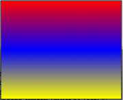
- CSS3 Linear Gradients
- Linear Gradients- Left to Right
background: -webkit-linear-gradient(left, red , blue); /* For Safari */ background: -o-linear-gradient(right, red, blue); /* For Opera 11.1 to 12.0 */ background: -moz-linear-gradient(right, red, blue); /* For Firefox 3.6 to 15 */ background: linear-gradient(to right, red , blue); /* Standard syntax */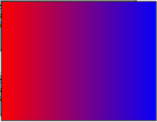
- CSS3 Linear Gradients
- Linear Gradients- Diagonal
background: -webkit-linear-gradient(left top, red , blue); /* For Safari */ background: -o-linear-gradient(bottom right, red, blue); /* For Opera 11.1 to 12.0 */ background: -moz-linear-gradient(bottom right, red, blue); /* For Firefox 3.6 to 15 */ background: linear-gradient(to bottom right, red , blue); /* Standard syntax */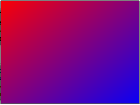
- CSS3 Linear Gradients
- Linear Gradients- Angular
background: linear-gradient(130deg, red, blue, green);

- CSS3 Linear Gradients
- Linear Gradients- Transparency
background: linear-gradient(to right, rgba(255,0,0,0), rgba(255,0,0,1));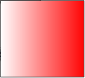
- CSS3 Linear Gradients
- Linear Gradients- Repeating
background: repeating-linear-gradient(red, yellow 10%, green 20%);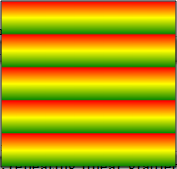
- CSS3 Radial Gradients
- Defined by center
- Define at least two color stops
- Can also specify the gradient's
- Center
- Shape (circle or ellipse)
- closest-side
- farthest-side
- closest-corner
- farthest-corner
- By default, center is center, shape is ellipse, and size is farthest-corner
- CSS3 Radial Gradients
- Radial Gradients- Evenly Spaced Color Stops (this is default)
#grad{
background: -webkit-radial-gradient(red, green, blue); /* Safari */
background: -o-radial-gradient(red, green, blue); /* For Opera 11.1 to 12.0 */
background: -moz-radial-gradient(red, green, blue); /* For Firefox 3.6 to 15 */
background: radial-gradient(red, green, blue); /* Standard syntax */
}
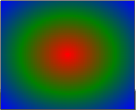
- CSS3 Radial Gradients
- Radial Gradients- Differently Spaced Color Stops
background: -webkit-radial-gradient(red 5%, green 15%, blue 60%); /* Safari */ background: -o-radial-gradient(red 5%, green 15%, blue 60%); /* For Opera 11.1-12.0 */ background: -moz-radial-gradient(red 5%, green 15%, blue 60%); /* For Firefox 3.6-15 */ background: radial-gradient(red 5%, green 15%, blue 60%); /* Standard syntax */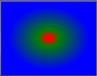
- CSS3 Radial Gradients
- Radial Gradients- Set Shape
background: -webkit-radial-gradient(circle, red, yellow, green); /* Safari */ background: -o-radial-gradient(circle, red, yellow, green); /* Opera 11.1 to 12.0 */ background: -moz-radial-gradient(circle, red, yellow, green); /* Firefox 3.6 to 15 */ background: radial-gradient(circle, red, yellow, green); /* Standard syntax */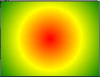
- CSS3 Radial Gradients
- Radial Gradients- Repeating
#grad
{
height:150px;
width:200px;
background: -webkit-repeating-radial-gradient(blue, magenta 10%, white 15%); /* For Safari */
background: -o-repeating-radial-gradient(blue, magenta 10%, white 15%); /* For Opera 11.1 to 12.0 */
background: -moz-repeating-radial-gradient(blue, magenta 10%, white 15%); /* For Firefox 3.6 to 15 */
background: repeating-radial-gradient(blue, magenta 10%, white 15%); /* Standard syntax
}
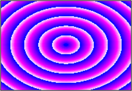
Use CSS 3 to create some nice subtle gradients; or very compelling gradients! CSS 3 Gradients are not the simplest things by any means; there are several values to account for when projecting your gradient and it only worsens when working with radial gradients.
background:-moz-linear-gradient(pos, #AAA B, #XXX Y);
or :-moz-radial-gradient(pos, #AAA B, #XXX Y);
pos = the position of the first colour, giving direction to the gradient
#AAA = primary colour
B = where the fade begins (%)
#XXX = secondary colour
Y = where the fade begins (%)
The -webkit-gradient() is built slightly differently but works in the same manner, creating a start position and then the colors from() and to();
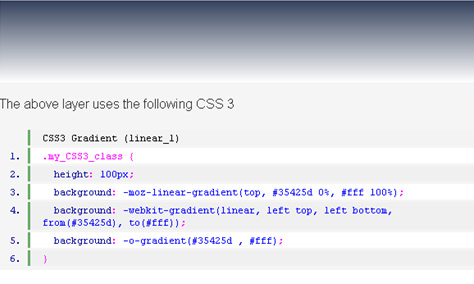 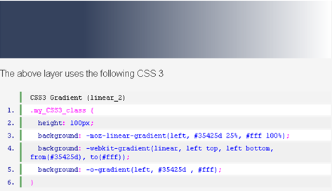- RGBA(Red,Green,Blue,Alpha opacity)
rgba(100%,0%,0%,0.8) produces 80% red. - HSLA (Hue, Saturation, Lightness, Alpha opacity)
hsla(0,100%, 50%,1.0) produces 100% red. - opacity
Sets the opacity level for an element from 0 to 1.0.
- Resize
- Resizable elements can be created
- box-sizing
- Elements can be fitted in a certain way into an area
- outline-offset
- Offsets an outline
- Draws it beyond the border edge
- Outlines differ from borders in two ways:
- Outlines do not take up space
- Outlines may be non-rectangular
- CSS3 Resize
- Resizable elements can be created
div
{
border:2px solid;
width:300px;
resize:both;
overflow:auto;
}
The size of this element can be changed by the user any time he/she wants
- CSS3 Box Sizing
- Elements can be fitted in a certain way into an area
<style>
.container
{
width:15em;
border:1em solid #112288;
background-color: #2dadda;
opacity:0.8;
}
.box
{
box-sizing:border-box;
-moz-box-sizing:border-box; /* Firefox */
width:50%;
border:10px solid #aedafb;
background-color: #aeeccc;
float:none;
}
</style>
<div class="container">
<center>
<div class="box">Domshom 1</div>
<div class="box">Domshom 2</div>
<div class="box">Domshom 3</div>
</center>
</div>

- outline-offset
- Offsets an outline
- Draws it beyond the border edge
- Outlines differ from borders in two ways:
- Outlines do not take up space
- Outlines may be non-rectangular
<style>
div
{
width:125px;
height:20px;
margin:50px;
padding:20px;
border:3px solid blue;
outline: 3px solid green;
outline-offset:5px;
}
</style>
<div>Domshom</div>
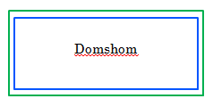
http://www.stanford.edu/group/ttsclasses/css/
http://border-radius.com/
http://caniuse.com/
http://css-tricks.com/
http://css3.bradshawenterprises.com
http://css3.info/
http://cssplay.co.uk/menu/css3-marquee.html
http://davidwalsh.name/dw-content/webkit-styles.php
http://dev.w3.org/csswg/
http://fontsquirrel.com/
http://google.com/webfonts
http://hex2rgba.devoth.com/
http://hslpicker.com/
http://html5rocks.com/
http://leemunroe.com
http://meyerweb.com/eric/css/
http://msdn.microsoft.com/
http://quackit.com/css
http://quirksmode.org/css/contents.html
http://standardista.com
http://standardista.com/sxsw
http://storiesinflight.com/html5/ruby.html
http://stubbornella.org/content/category/general/geek/css/
http://thinkvitamin.com/design/stay-on-target/
http://uselesscode.org/blog/82/pure-css3-tab-widget
http://virtuelvis.com/gallery/css3/target/interface.html
http://w3.org/
http://w3schools.com
http://westciv.com/tools/3Dtransforms
http://xanthir.com/blog
http://xanthir.com/blog/b4580
http://selectivizr.com